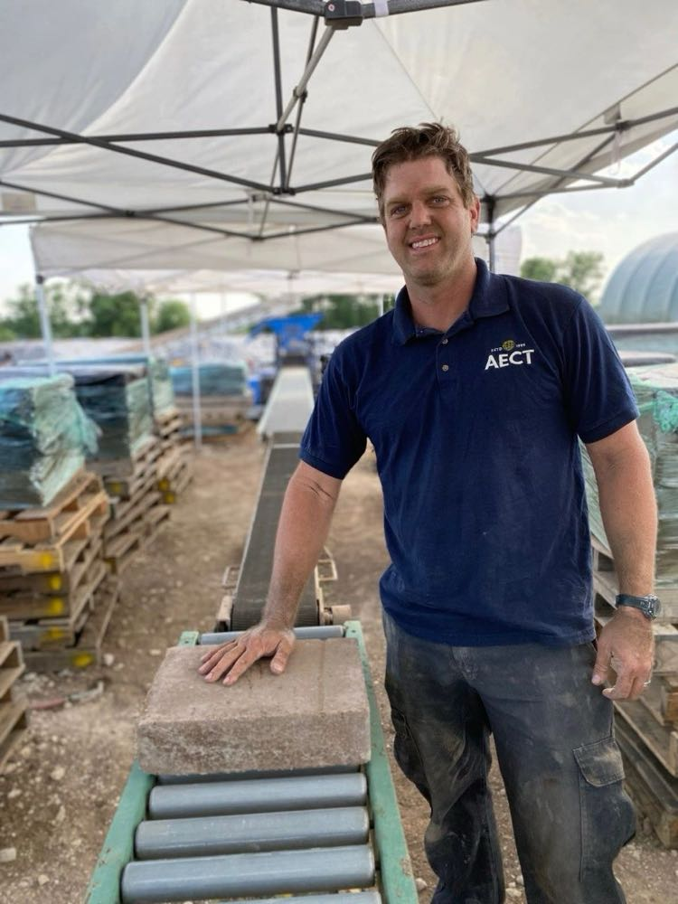
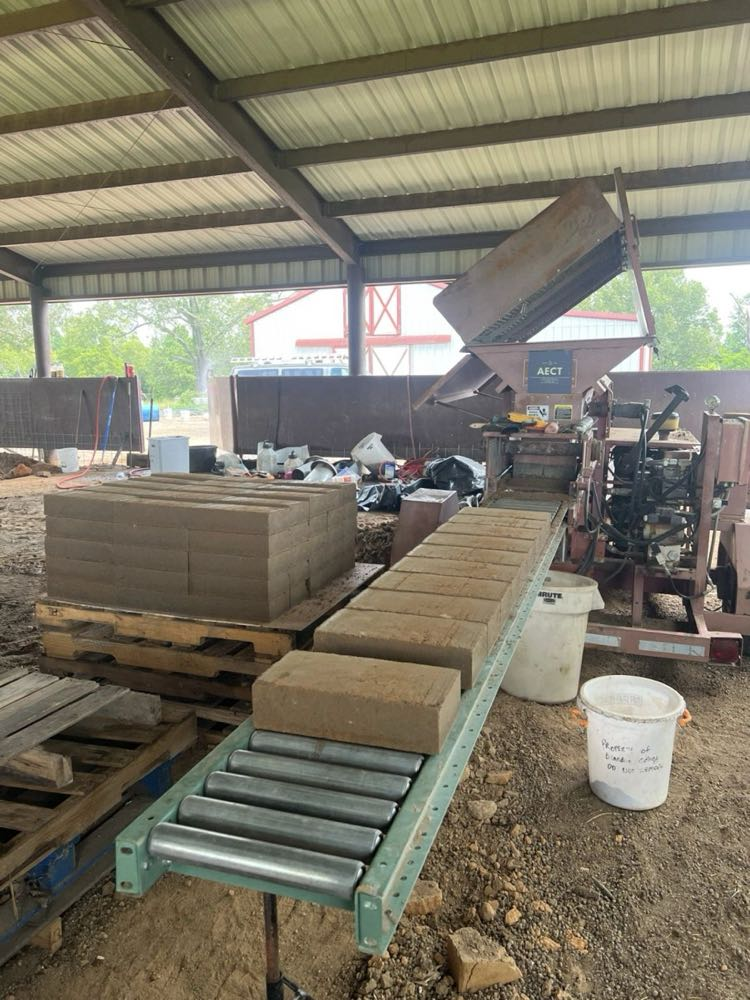
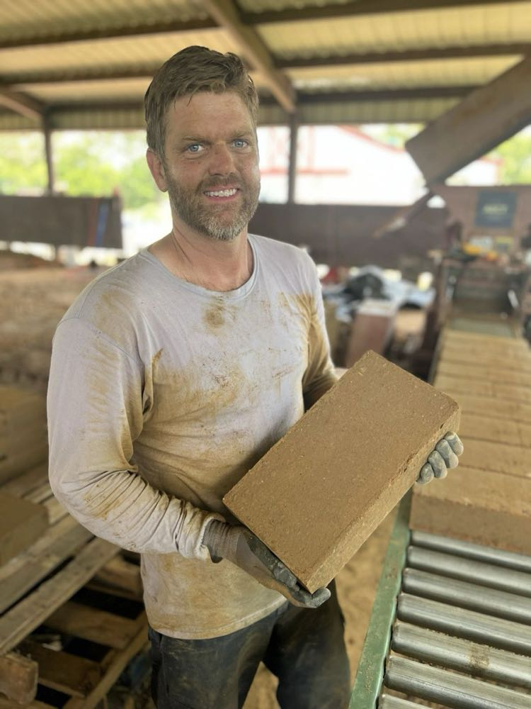

At AECT, we are known for manufacturing the best, longest-lasting compressed earth block (CEB) machines in the world:
Check out: Our hand-made CEB machines
However, what really sets us apart is our 35 years of CEB experience and knowledge, which allows us to provide the industry-best support for our customers.
The first thing our customers realize when they jump into the world of CEB construction is this: having a CEB machine in their possession is about 10% of the battle. From there, they are on a steep learning curve for months, if not years, as they refine their craft of producing and building with CEBs. As robust and dependable as our machines are, just as important is the training and support we offer our customers to ensure their long-term success. Now days, the price of an AECT machine doesn’t just include a proven, top-of-the-line piece of CEB equipment…it includes a full warranty on that machine, a week-long, comprehensive, one-on-one intro-to-CEB-production training at the customer’s site, and lifetime support for our customers as they continue to learn and enter new phases of CEB production and construction.

This year, we helped set up successful CEB production plants in New Mexico, Colorado, Texas, and Oklahoma. A great example of how an intro-to-CEB-production week typically plays out took place in Nacogdoches, Texas, where we helped a new customer get set up making beautiful CEBs with a refurbished AECT 3500 Machine:
Day 1: 9:00 am start - Discuss site setup and process flow, discuss and begin to test dirt, re-order portland cement - customer had purchased concrete mix (which is 17% cement, 33% sand, and 50% gravel) instead of cement, cull bad (weak) pallets, clear work area and prepare mixing pit (customer mixed material with a tractor tiller on the ground).
Day 2: 8:00 am start - Observe and interpret jar test of native dirt and find that dirt is high in clay…roughly 50% (generally, you can’t make good CEBs with clay content greater than 35%). Set up CEB plant, to include: Tractor, AECT 3500 CEB machine, gravity conveyor, pallets, dirt, cement, plastic wrap, staple gun, water hose, shovels, tape measure (for block height calibration), forklift, finished pallet curing area.
Day 3: 7:00 am start - Final site setup and kick-off of CEB production process to include: mixing material in pit (one part cement to ten parts native dirt…then add water to feel - about 5% moisture), loading material into AECT 3500 with tractor bucket, produce and palletize initial batch of CEBs. First CEBs confirm what jar test indicated: native material too high in clay – material sticks while moving through machine and sticks to bottom of tray, resulting in blemishes on top of blocks / blocks show structural, lateral cracks as a result of “lamination” - a block that is breaking into layers as a result of a lack of structure that would be provided by course sand or gravel / blocks fall apart (into layers) when trying to move them from conveyor to pallet. Begin making calls and searching for alternative earthen material.
Day 4: 6:00 am start – Continue searching for alternative earthen materials, including visits to local quarries. Discover local asphalt plant that sells inexpensive waste screenings (leftovers from their gravel-screening process) that contain ¼-minus material (sharp gravel and sand). Produce test blocks of new material mixes (1 to 1, 2 to 1, and 3 to 1 ratios of native dirt to waste aggregate) using an AECT Small Block Press. Here's a video of our test session in Nacogdoches:
Nacogdoches, Texas Lab Session
Day 5: 5:00 am start – Water-submersion test and compressive strength test sample blocks (that were produced the day before), using AECT Small Block Press: 1 to 1 and 2 to 1 mixes tested very well…compressive strength over 2,000 psi and held up perfectly in water. Made real-world batches of 1 to 1 and 2 to 1 mix design in the AECT 3500 – both made beautiful, sound CEBs, so we decided to press forward with 2 native dirt to 1 waste aggregate mix design, using cost as a consideration, and effectively bringing the clay content down to a more appropriate 33%. Refined process flow and produced 300 good 8%-cement-stabilized CEBs.

Day 6: 4:00 am start (trying to beat the heat - 100 degrees F and 100% humidity) – Produced another 700 perfect CEBs. Completed training on moisture, mixing, AECT machine calibration (optimum pressure) and maintenance, and block palletizing, wrapping, curing, and staging.
Nacogdoches, Texas CEB Production
One week of our one-on-one guidance and training typically saves our customers months of trial and error as they begin their CEB journey. In addition to providing this service to customers who purchase machines from us, we also provide it a-la-carte, as outlined on our website here:

Thank you, as always, for your interest in compressed earth block construction.
Regards,